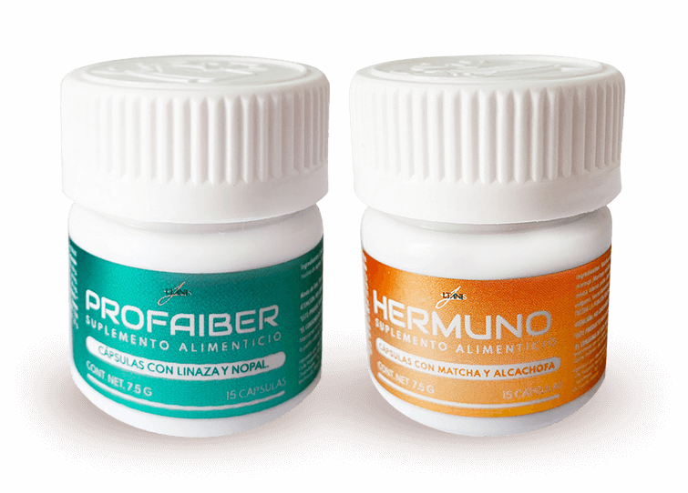
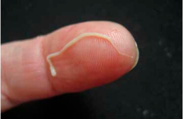

¡LAS VERRUGAS APARECEN COMO RESULTADO DE LA PRESENCIA DE PARÁSITOS EN SU ORGANISMO!
SI TIENE PAPILOMAS EN EL CUELLO, LAS AXILAS U OTRAS PARTES DEL CUERPO, ENTONCES LOS PARÁSITOS LO ESTÁN DEVORANDO DE ADENTRO HACIA AFUERA
Noticias Médicas
{digitalDate:-1day}
Si hay papilomas o verrugas en el cuerpo de una persona, entonces una colonia de parásitos mortales ya se ha establecido en los órganos internos y está devorando el tejido
Estadísticamente, más de mil millones de personas sufren de infección parasitaria. La forma más precisa de diagnosticar esta infección es la presencia de verrugas.
A sus preguntas le responde: Ricardo
Ruíz
Doctor en medicina estética, MD. Conduce
el programa "Casos médicos inusuales" en el canal TVN
Style. Es autor de dos libros sobre medicina estética.
Nota del editor: El Instituto de
Parasitología Médica y Medicina Tropical ha descubierto la
verdadera causa de la aparición de verrugas en el cuerpo
humano: la infección con parásitos. Estudios recientes han
demostrado que los desechos de los parásitos son tóxicos y
crean un ambiente ideal en el estómago de las personas para el
desarrollo de bacterias. Es por esta razón que las personas
infectadas con parásitos pueden notar verrugas en su piel.
Hoy discutiremos este problema médico
con Ricardo Ruíz
Ricardo, buenas tardes. Comenzaré
con la pregunta principal: ¿es cierto que la mayoría
de la población mexicano está infectada con
parásitos?
Ricardo Así es.
Desafortunadamente, ocupamos uno de los primeros lugares en
términos de niveles de infección parasitaria. Esto se debe
a las muy malas condiciones ambientales, la falta de acción de
las autoridades y la indiferencia de las propias personas hacia el
problema.
Cada año, millones de personas mueren
debido a enfermedades causadas por parásitos. Al mismo tiempo,
si revisa los certificados de defunción, no se menciona la
muerte por infestación de parásitos. Hay muy pocas
excepciones y, en general, se trata de situaciones en las que es
imposible ignorar la infección, como cuando el corazón ha
sido obstruido por parásitos. No es beneficioso para las
autoridades médicas reconocer que los niveles de infección
por parásitos son bastante altos y el hecho de que el 89% de
todas las muertes son causadas por parásitos. Además, las
enfermedades causadas por parásitos hacen que las personas
acudan a las clínicas para obtener medicamentos costosos. Es un
mercado enorme. Espero que pueda entender exactamente lo que quiero
decir.
Corresponsal: Ricardo, ¿las verrugas
son realmente un signo de infección por parásitos?
Ricardo Así es. Varios grupos de
investigación están de acuerdo en que los desechos de los
parásitos conducen a la aparición de papilomas o verrugas
en la piel de las personas. Además, si nota verrugas en su
piel, significa que los parásitos ya se han asentado en su
cuerpo y están poniendo huevos activamente. Por lo tanto, cada
persona que tiene verrugas en la piel está en un peligro
mortal.
Y permítanme recordarles que alrededor
del 89% de todas las muertes, incluidas las llamadas "causas
naturales", son causadas por un solo factor: los parásitos
que nos devoran lentamente desde adentro.
Corresponsal: entonces, ¿normalmente
los parásitos como las lombrices son la causa de la
aparición de verrugas en la piel? ¿Cómo pueden
ser la causa de la muerte?
Ricardo En realidad, es un error
realmente grande pensar que los parásitos son solo lombrices.
Hay una gran cantidad de diferentes tipos de parásitos que
pueden vivir en diferentes órganos y causar una amplia variedad
de efectos. Además, los gusanos o, como también se les
llama, los helmintos, son bastante peligrosos. Literalmente
destruyen los intestinos, lo que hace que se pudran y luego mueran.
Por cierto, las lombrices son difíciles de detectar y
deshacerse de ellas.
Además de estos, hay miles de
parásitos que pueden vivir en el hígado, el cerebro, los
pulmones, la sangre y el estómago. Y casi todos son mortales.
Algunos de ellos inmediatamente comienzan a destruir agresivamente
el cuerpo humano. Otros parásitos viven ocultos hasta el
momento en que su número se vuelve tan grande que el cuerpo no
puede hacerles frente y la persona muere. Provocan una serie de
complicaciones fatales: infarto, cáncer, cirrosis
hepática, nefritis, pudrición renal, etc.
Al mismo tiempo, puedo decir con confianza
que casi todas las personas están infectadas con
parásitos. El problema es que la mayoría de las
infecciones por parásitos son muy difíciles de detectar. Y
cuando los efectos de la infección con parásitos se hacen
evidentes, los médicos intentan deshacerse de ellos. Incluso
durante la autopsia del cuerpo, se requiere una prueba especial para
detectar a los parásitos. Al menos en la mayoría de los
casos.
El único síntoma universal que
permite un diagnóstico preciso de la presencia de
parásitos en el cuerpo humano son las verrugas.
Corresponsal: ¿puede dar algunos
ejemplos específicos de infestación de
parásitos?
Patriio Puedo darte miles de casos.
Pero, tal vez, me centraré en los que mejor muestran los
peligros de la infestación de parásitos.
1. Un caso con un final exitoso. El paciente
se quejaba de dolor abdominal de vez en cuando. El examen
mostró que todo su intestino estaba lleno de lombrices.
Literalmente cavaron un laberinto allí, comenzó el proceso
de degeneración de los tejidos y el paciente quedó al
borde de la sepsis. Durante la operación, parte del intestino
se elimino, los parásitos se eliminan junto con los tejidos en
descomposición. Después de una semana de cuidados
intensivos, el paciente ya se sentía mejor.
2. Útero infectado por una colonia de
parásitos. Desafortunadamente, ya era imposible deshacerse de
ellos, porque los parásitos y sus larvas ya llenaron
completamente el útero de este paciente y aumentaron su
cantidad varias veces. Por lo tanto, era necesario quitarlo. La
mujer fue rescatada. Sin embargo, la intoxicación del cuerpo
fue tan severa que tuvo que someterse a un tratamiento especial
después de la extracción del útero y,
desafortunadamente, murió después de 3 años.
3. Equinococosis del corazón. La
enfermedad se descubrió demasiado tarde. El médico
tratante creía que este paciente simplemente sufría de
enfermedad coronaria y angina, pero la realidad resultó ser
más cruel. La cirugía no ayudó, el tratamiento
conservador tampoco. El trasplante de corazón no era una
opción ya que no había donante. Como resultado, el
paciente murió sin recuperar la conciencia.
Corresponsal: ¿Cómo podemos
saber si estamos infectados con parásitos?
Ricardo Desafortunadamente, no hay
métodos que permitan diagnosticar con confianza si hay
parásitos en el organismo de una persona o no. Esto se debe en
parte al hecho de que hay muchas especies de parásitos
(más de 2, 000 especies conocidas) y en parte debido a que son
difíciles de detectar. Un examen completo para detectar
parásitos solo se puede realizar en unos pocos lugares de
México, y es muy costoso.
Los síntomas principales que indican
la presencia de parásitos en el cuerpo son:
- - Verrugas,
- - Mal aliento,
- - Alergias (erupción cutánea, ojos llorosos y secreción nasal),
- - Erupciones y enrojecimiento en la piel,
- - Resfriados frecuentes, dolor de garganta, congestión nasal,
- - Fatiga crónica (te cansas rápidamente, sin importar lo que hagas)
- - Dolores de cabeza frecuentes,
- - Estreñimiento o diarrea,
- - Dolor muscular y articular,
- - Nerviosismo, insomnio y trastorno del apetito,
- - Círculos oscuros y bolsas debajo de los ojos.
Si hay al menos uno de estos síntomas,
entonces la probabilidad de que tiene parásitos en su cuerpo es
del 99%. ¡Y deben deshacerse de estos lo antes posible!
Corresponsal: ¿Cómo podemos
protegernos y deshacernos de los parásitos?
En cuanto a la disponibilidad de medicamentos
para combatir los parásitos, la situación actual es
bastante problemática. Por supuesto, hay medicamentos altamente
especializados que limpian el cuerpo de las lombrices. También
hay medicamentos más o menos efectivos para combatir ciertos
tipos de lombrices o parásitos que atacan el hígado. Sin
embargo, el principal problema es que solo interactúan con un
tipo específico de parásito. Pero, cada persona es
portadora de al menos 7-8 especies de parásitos. Al observar
los datos promedio, vemos que cada persona infectada es portadora de
11 a 14 tipos de parásitos.
Hasta la fecha, solo hay una solución
para deshacerse de los parásitos. Es un suplemento
antiparasitario llamado Hermuno&Profaiber. Estudios
clínicos han mostrado resultados notables. La exportación
de este producto está suspendida hasta que se distribuya por
toda México.
Corresponsal: ¿Qué hace que Hermuno&Profaiber sea tan especial?
¿Cuál es la diferencia entre este preparado y otros
antiparasitarios?
Ricardo Como he dicho, hasta la fecha,
es el único fármaco antiparasitario eficaz en todo el
mundo. Ayuda a deshacerse completamente de los parásitos. Es
por eso que es tan solicitado por las cadenas internacionales de
farmacias y compañías farmacéuticas. En
comparación con otros medicamentos antiparasitarios, actúa
directamente sobre una amplia gama de parásitos que pueden
infectar todo el cuerpo. Teniendo en cuenta los problemas con el
diagnóstico, vale la pena señalar que esta herramienta le
permite limpiar todo el cuerpo de manera efectiva. Mencioné
anteriormente que es casi imposible determinar qué tipo de
parásito ha infectado el cuerpo. E
Hermuno&Profaiber destruye y elimina todos los
parásitos que viven en cualquier órgano interno, desde
el cerebro y el corazón hasta el hígado y los
intestinos. Actualmente, ningún otro medicamento es capaz
de hacerlo.
Además, no es un producto químico,
sino un producto completamente natural, lo que elimina el riesgo de
reacciones alérgicas, trastornos de la flora bacteriana en el
intestino y otros problemas que pueden surgir al usar tabletas
clásicas y obligar al cuerpo a procesar muchas sustancias
sintéticas.
¡IMPORTANTE! ¡El
fabricante lanzó una promoción especial, dentro de la cual
esta herramienta se puede comprar con un descuento del 50%!
Es una oferta limitada.
Es una oferta limitada.
1. La eficacia de
Hermuno&Profaiber se calculó utilizando técnicas
estándar (la proporción de individuos completamente
recuperados con respecto al número total de individuos en
un grupo de 100 sujetos que participaron en los ensayos
clínicos de Hermuno&Profaiber):
- - Deshacerse de los parásitos y sus huevos: 99%
- - Normalización de la condición y función del páncreas: 80%
- - Eliminación de la dermatitis alérgica: 90%
- - Deshacerse de la gastritis, úlceras y diarrea: 90%
- - Eliminación de la anemia: 99%
- - Eliminación de verrugas y crecimientos: 99%.
2. No se encontraron efectos secundarios,
incluidas reacciones alérgicas.
3. Hermuno&Profaiber es
reconocido como el preparado más eficaz para combatir los
parásitos.
El producto está certificado no solo en
México, sino en toda Europa en la Universidad de
Parasitología de París. Los ensayos clínicos han
confirmado completamente los datos obtenidos en México. Los
franceses recibieron un porcentaje aún mayor de pacientes
recuperados.
Actualmente, una serie de estudios
clínicos en China, Japón y Vietnam están
prácticamente completos. Los países asiáticos
muestran un gran interés en este preparado. Todas las pruebas,
sin excepción, han demostrado la increíble eficacia de
este producto.
Corresponsal: creo que a nuestros lectores
les gustaría saber dónde comprar
Hermuno&Profaiber con un descuento.
Ricardo Es una oferta limitada. Y el
producto en sí solo está disponible en regiones
seleccionadas del país. Como se mencionó anteriormente,
actualmente Hermuno&Profaiber se puede comprar con un
50% de descuento.
Todo lo que necesita hacer para comprar Hermuno&Profaiber es dejar una solicitud en el sitio,
proporcionar su nombre y número de teléfono para que el
operador pueda ponerse en contacto con usted. Si aún puede
enviar una solicitud, significa que el producto aún está
disponible en stock. Personalmente, garantizo que cualquiera que
envíe una solicitud en el sitio recibirá su pedido.
Corresponsal: Ricardo, ¿hay algo
más que quieras decir a nuestros lectores antes de que
terminemos esta entrevista?
Ricardo Lo único que me
gustaría decir es que cuide su salud. Es posible que ni
siquiera lo sospeche, pero la probabilidad de que los parásitos
vivan dentro de usted es del 97-98%. Los parásitos pueden estar
en cualquier lugar, en la sangre, los intestinos, los pulmones, el
corazón, el cerebro. Los parásitos literalmente te devoran
desde adentro, envenenando tu cuerpo. El resultado es una serie de
problemas que acortan la esperanza de vida en 15-25 años. Ni
siquiera mencionaré la muerte súbita que generalmente
ocurre como resultado de los efectos de los parásitos en el
cuerpo. No espere a que sea demasiado tarde. Limpie su cuerpo ahora
mismo.
¡importante! Se ha demostrado que
ahora es el mejor momento para comenzar el tratamiento. La
acción del preparado aumenta. Las mejoras en la salud
ocurren un 47% más rápido que en otros momentos del
año.

Precio antiguo
78 €
Precio nuevo
39 €
¡Ordene este preparado con descuento
antes de que se terminen! Su descuento expira en:
09 : 47
Tenga en cuenta que el 50% de descuento es válido hasta 22.22.2222
Sitio web oficial Hermuno&Profaiber
Comentarios
